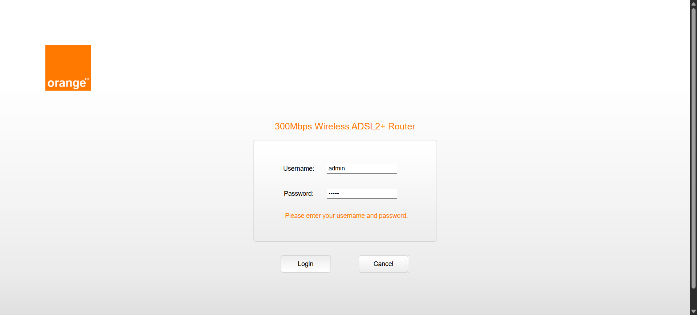
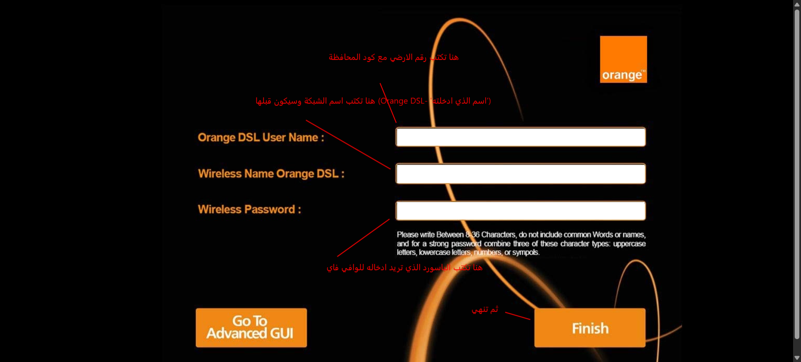
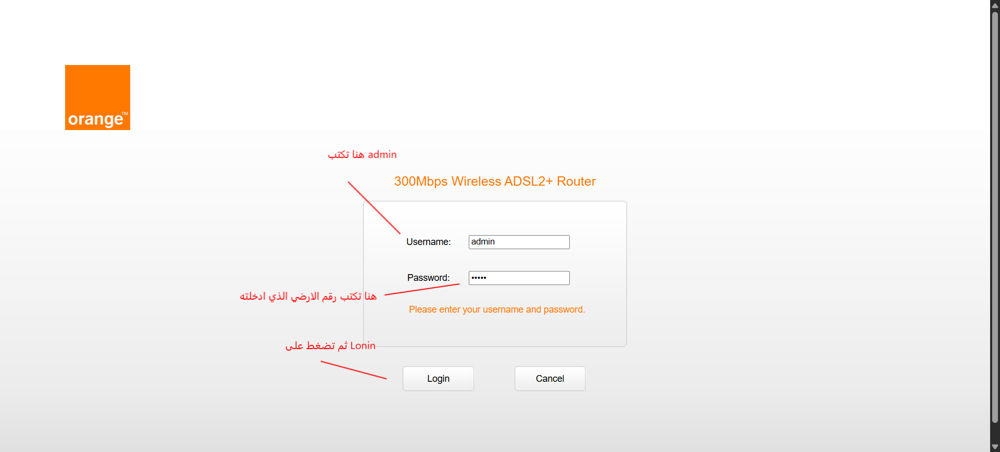
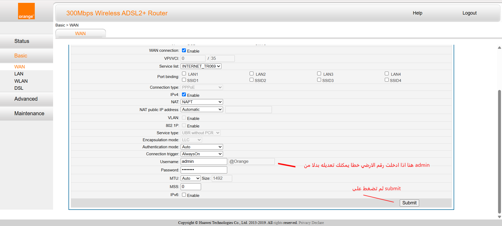
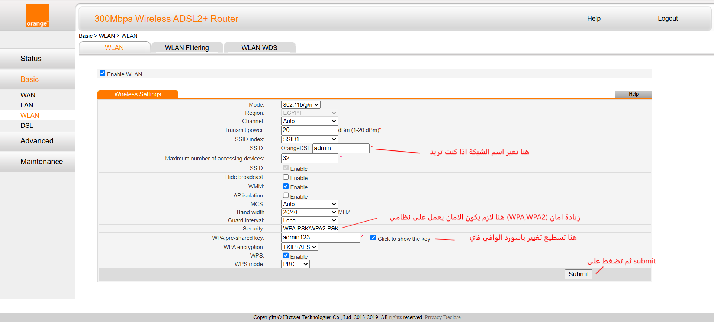

كيفية ضبط الراوتر خطوة بخطوة
هذه الصفحة مصممة لتوضيح الإعدادات الأساسية للرواتر مثل الرقم الأرضي، الواي فاي، وFTTH.
Router HG531sV1

1) توصيل الكابل والرقم الأرضي
تأكد من توصيل الكابل الأرضي وكبل الLAN الخاص بالكمبيوتر بشكل صحيح ثم شغّل الراوتر وانتظر حتى يثبت المؤشر.

2) الدخول إلى صفحة الإعداد
اكتب عنوان IP الخاص بالراوتر في المتصفح 192.168.1.1 ثم أدخل اسم المستخدم وكلمة المرور في هذا الروتر بعد اعادة الضبط يكون الاسم والباسورد هم admin .

3) ضبط رقم الارضي
هنا تكتب رقم الارضي مع كود المحافظة كما موضح بالصورة

4) الدخول الى صفحة الراوتر
هنا تكتب admin في الاسم والباسورد تكتب رقم الارضي الذي ادخلته قبلا كما موضح بالصورة

5) يكتب هنا رقم الارضي
التاكد من رقم الارضي صحيح مع كود المحافظة وترك الباسورد كما هولا يغير

6) تعديل اسم وباسورد الشبكة
تسطيع تغيير اسم وباسورد الشبكة وتحديد عدد الاجهزة وتسطيع اخفاء او اظهار الشبكة عن طريق (Hide broadcast) عند تفعيلها سوف تختفي الشبكة.
لكي يعمل تظهر الشبكة تريد ادخال اسم وباسورد الشبكة مع نظام الامان في هاتفك او جهازك اللوحي
